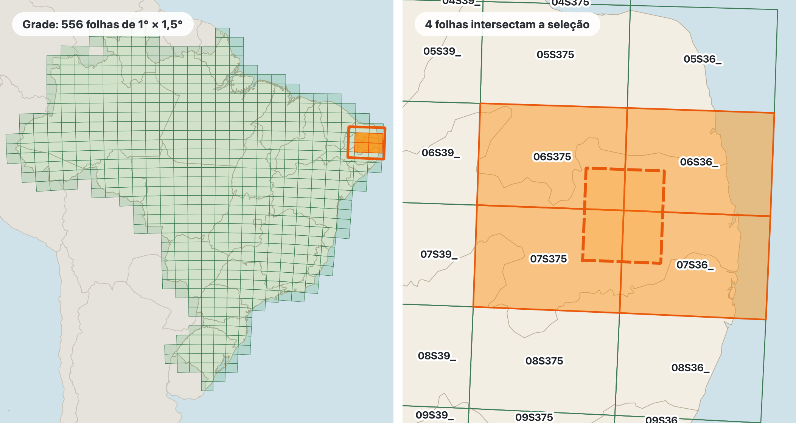
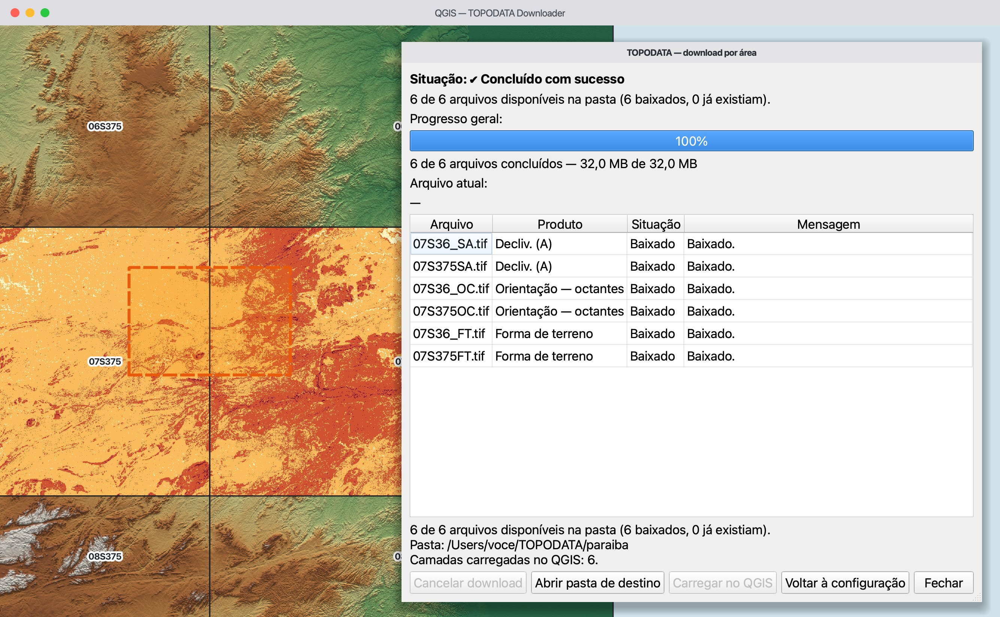
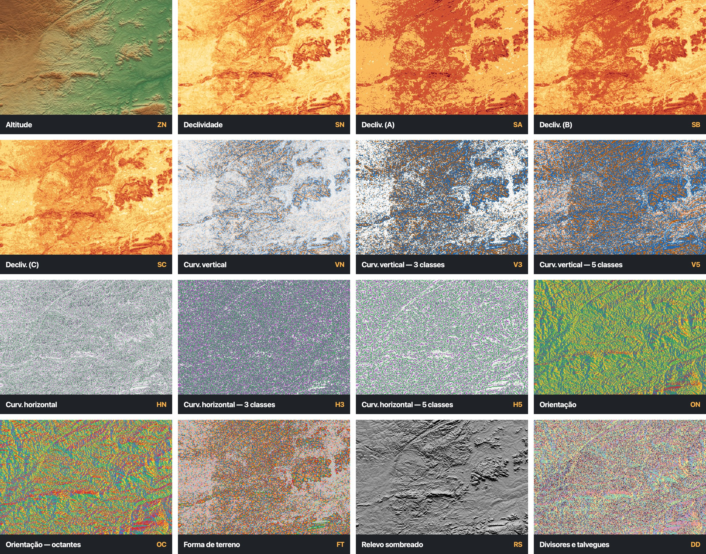
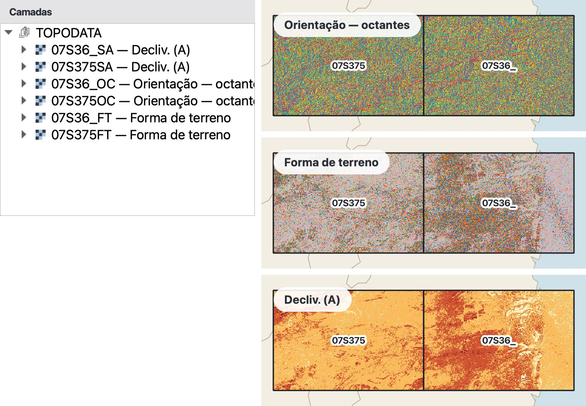

Um complemento do QGIS que identifica as quadrículas da grade TOPODATA que intersectam a área selecionada e baixa os produtos correspondentes. Antes do download, apresenta a quantidade de arquivos e, quando o servidor informa o tamanho, uma estimativa baseada no cabeçalho HTTP. Os arquivos são mantidos individualmente, sem mosaico, recorte ou reprojeção.
⬇ Instalar o plugin ★ Código no GitHub
Visão geral
O TOPODATA é um banco de dados geomorfométricos de cobertura nacional, desenvolvido pelo Instituto Nacional de Pesquisas Espaciais (INPE). Seus produtos são derivados dos dados de elevação da missão SRTM (Shuttle Radar Topography Mission) e incluem variáveis topográficas e produtos classificados. O conjunto foi refinado de um espaçamento original de 3 segundos de arco para 1 segundo de arco por krigagem, com o objetivo de favorecer as derivações geomorfométricas. Esse refinamento não acrescenta informação altimétrica independente nem deve ser interpretado como aumento equivalente da resolução espacial efetiva ou da acurácia dos dados de origem. [1] [2]
O plugin identifica as quadrículas da grade TOPODATA — ou folhas da articulação cartográfica — que intersectam a área selecionada e automatiza o download dos produtos correspondentes. A grade TOPODATA é consultada localmente; a consulta de tamanho e o download dos rasters exigem conexão com o servidor do INPE.
Um retângulo no mapa do QGIS, inclusive quando o projeto usa um SRC diferente do EPSG:4326.
As quadrículas que intersectam a seleção, os arquivos por produto e por quadrícula e o tamanho informado pelo servidor, quando disponível.
Com progresso, cancelamento, tentativas limitadas e retomada validada.
Opcionalmente, cada GeoTIFF baixado entra como uma camada raster separada no projeto QGIS.

Instalação
Nenhuma biblioteca Python adicional: o complemento usa PyQGIS e a biblioteca padrão do Python distribuída com o QGIS.
data.inpe.br) e baixar os arquivos.QGIS 4 e Windows ainda não foram testados. Não interprete “versão mínima declarada” como garantia de compatibilidade em todas as plataformas: consulte os testes da versão publicada do plugin.
Baixe o código-fonte do repositório do plugin (Code → Download ZIP) ou clone o repositório e, na pasta dele, gere o pacote. O script cria dist/topodata_downloader-<versão>.zip, conforme a versão do projeto.
git clone https://github.com/marcellobenigno/topodata-downloader.git
cd topodata-downloader
python scripts/make_zip.pyComplementos → Gerenciar e instalar complementos → Instalar a partir do ZIP, selecione o pacote e confirme. Se o complemento ainda estiver marcado como experimental, habilite Mostrar também os complementos experimentais nas configurações do gerenciador.
Na aba Instalados, confirme que TOPODATA Downloader está habilitado. O comando  deve aparecer na barra de complementos e no menu Raster → TOPODATA Downloader.
deve aparecer na barra de complementos e no menu Raster → TOPODATA Downloader.
A pasta do plugin pode ser vinculada à pasta de complementos do perfil do QGIS. Após alterar o código, recarregue o complemento com uma ferramenta como Plugin Reloader ou reinicie o QGIS.
# macOS
ln -s "$PWD/topodata_downloader" \
"$HOME/Library/Application Support/QGIS/QGIS3/profiles/default/python/plugins/topodata_downloader"
# Linux
ln -s "$PWD/topodata_downloader" \
"$HOME/.local/share/QGIS/QGIS3/profiles/default/python/plugins/topodata_downloader"No Windows, a pasta do perfil costuma estar em %APPDATA%\QGIS\QGIS3\profiles\default\python\plugins. Copie a pasta do complemento para esse local ou crie uma junção usando mklink /J.
Primeiros passos
O fluxo completo, da seleção no mapa às camadas no projeto. As etapas de grade e plano não usam a rede; tamanhos e download consultam o servidor do INPE.
Clique em Baixar dados TOPODATA por área. No mapa, clique e arraste para desenhar um retângulo sobre a área de interesse. Pressione Esc para cancelar a seleção. Um clique sem arraste não define uma área válida.
No diálogo, confira a extensão geográfica e as quadrículas identificadas.
Escolha a pasta de destino e marque um ou mais produtos. Confira a quantidade de arquivos e os tamanhos informados pelo servidor; a consulta de tamanhos pode levar alguns segundos.
Inicie o download. A execução ocorre em segundo plano para manter a interface do QGIS responsiva. Ao concluir, os rasters são carregados no projeto se a opção correspondente estiver habilitada.


Produtos
O TOPODATA publica 16 produtos por quadrícula, identificados por códigos. Os dados numéricos são distribuídos como valores reais de 32 bits (Float32); os produtos classificados usam valores inteiros de 8 bits (Byte/UInt8), conforme as características gerais informadas pelo INPE. [1]

07S36_ (entre Itabaiana e Campina Grande, PB) nos 16 produtos. Classificados com as cores que o plugin aplica ao carregar; numéricos com rampas de cor escolhidas para a figura.Os nomes abaixo descrevem o conteúdo dos produtos. Para interpretar limites de classe, convenções de sinal ou valores especiais, consulte a legenda e os metadados oficiais do produto. As cores aplicadas pelo plugin são uma configuração de simbologia no QGIS; não alteram os valores dos pixels.
| Produto | Código | Tipo e interpretação geral | Cores no QGIS | Tamanho aprox. por quadrícula* |
|---|---|---|---|---|
| Altitude / altimetria numérica | ZN | Modelo digital de elevação (MDE) refinado; altitude ortométrica em metros, referenciada ao EGM96. | cinza (padrão do QGIS) | 31–103 MB |
| Declividade numérica | SN | Inclinação da superfície em porcentagem (%). | cinza (padrão do QGIS) | 31–113 MB |
| Declividade — classificação A | SA | Quatro classes; classificação associada a Marques (1971), atualizada em Lepsch et al. (1991). | 0,4–2,1 MB | |
| Declividade — classificação B | SB | Sete classes, identificadas de A a G, segundo Lepsch et al. (1991). | 0,6–3,2 MB | |
| Declividade — classificação C | SC | Seis classes, de plano a escarpado, conforme EMBRAPA (1999). | 0,4–2,9 MB | |
| Curvatura vertical numérica | VN | Curvatura do perfil do terreno; valores e convenção de sinal conforme a definição do TOPODATA. Unidade indicada pelo guia: graus por metro (°/m). | cinza (padrão do QGIS) | 32–118 MB |
| Curvatura vertical — 3 classes | V3 | Vertentes côncavas, retilíneas e convexas. | 0,4–3,1 MB | |
| Curvatura vertical — 5 classes | V5 | Classes graduais de concavidade e convexidade, incluindo a classe retilínea. | 1,5–5,3 MB | |
| Curvatura horizontal numérica | HN | Curvatura em planta; descreve convergência ou divergência das linhas de fluxo. Unidade indicada pelo guia: graus por metro (°/m). | cinza (padrão do QGIS) | 20–69 MB |
| Curvatura horizontal — 3 classes | H3 | Áreas convergentes, planares e divergentes. | 1,7–5,3 MB | |
| Curvatura horizontal — 5 classes | H5 | Classes graduais de convergência e divergência. | 1,8–5,9 MB | |
| Orientação de vertentes numérica | ON | Azimute da direção de máxima declividade, entre 0° e 360°, segundo a convenção do produto. | cinza (padrão do QGIS) | 31–114 MB |
| Orientação de vertentes — octantes | OC | Oito classes direcionais: N, NE, E, SE, S, SW, W e NW. | 3,3–10 MB | |
| Forma de terreno | FT | Classificação de formas de terreno derivada da combinação das curvaturas vertical e horizontal. | 1,9–7,7 MB | |
| Relevo sombreado (hillshade) | RS | Representação tonal do relevo produzida por iluminação simulada; não é uma medida de altitude. | cinza (padrão do QGIS) | 28–107 MB |
| Divisores e talvegues | DD | Produto para apoiar a identificação de linhas de drenagem (talvegues) e divisores de água, combinado à informação de orientação conforme o método TOPODATA. | 4,1–13 MB |
* Faixas observadas para quatro quadrículas de dimensões distintas (01N495, 09S375, 23S465, 33S54_). Não são limites garantidos para todas as quadrículas ou versões. Antes do download, o plugin consulta o Content-Length informado pelo servidor, quando disponível; sem resposta confiável, o tamanho aparece como indisponível, e não como um valor inferido.
SN é apresentada em porcentagem, não em graus. A relação entre porcentagem e ângulo não é linear; 100% corresponde a uma inclinação de 45°.Consulta espacial e downloads
Quais quadrículas entram, como a contagem e o tamanho são calculados, como um download é validado e como os arquivos chegam ao projeto.
O complemento inclui uma grade local (grade_topodata.geojson) com 556 polígonos em EPSG:4326 e os campos scene e url. O índice espacial seleciona candidatos pela extensão; cada candidato é então testado contra a geometria real do retângulo usando a relação topológica intersects.
Com essa regra, uma quadrícula é selecionada quando sua geometria compartilha qualquer porção com o retângulo, inclusive uma interseção apenas por borda ou vértice.
06S375 e 06S36_: entram as duas.07S36_, com a borda oeste exatamente na divisa: 07S375, apenas tocada, também entra.07S375: só ela entra.As geometrias das quadrículas podem ultrapassar ligeiramente os limites nominais da articulação; por isso, quadrículas adjacentes podem ser selecionadas perto de uma divisa.
A seleção é desenhada no SRC do projeto e transformada para EPSG:4326 antes da consulta. Para evitar tratar o retângulo projetado como uma simples caixa em coordenadas geográficas, sua borda é densificada (32 vértices extras por lado) antes da transformação. O diálogo apresenta a caixa envolvente geográfica da área selecionada.
HEAD ao servidor, sem transferir o conteúdo raster. Quando o servidor retorna Content-Length, esse valor representa o tamanho anunciado para a resposta. Vários arquivos são consultados em paralelo e os resultados ficam em cache durante a sessão..part. O nome final só é aplicado após a comparação do tamanho recebido com o tamanho anunciado e uma verificação do cabeçalho GeoTIFF. Essa checagem reduz o risco de tratar uma página de erro ou uma transferência incompleta como raster válido; ela não substitui uma validação integral por checksum, que o servidor não fornece..part.json e usa os cabeçalhos Range e If-Range. Os bytes só são anexados se a resposta indicar suporte à faixa (206 Partial Content) e se Content-Range confirmar o ponto inicial e o tamanho total esperados. Caso contrário, o arquivo parcial é descartado e o download reinicia, sem anexação insegura..part para uma tentativa posterior, se seus metadados permitirem retomada segura. Arquivos não iniciados são identificados como cancelados.Quando Carregar as imagens no QGIS ao concluir está habilitado, cada arquivo disponível é adicionado como uma camada raster separada em um grupo chamado TOPODATA. O nome da camada combina o nome do arquivo e o rótulo do produto, por exemplo 07S36_SA — Decliv. (A).
O carregamento não mosaica, recorta nem reprojeta os dados. Camadas que não puderem ser abertas são informadas com o motivo, e arquivos já carregados no projeto não são adicionados novamente. A simbologia aplicada às camadas classificadas é apenas uma representação visual no projeto QGIS: não modifica os valores armazenados no GeoTIFF e pode ser alterada nas propriedades da camada.

07S375 e 07S36_) de três produtos. Sem mosaico, recorte nem reprojeção — a divisa entre as quadrículas continua visível.Dados e limitações
O TOPODATA é derivado de dados da missão SRTM, coletados em fevereiro de 2000 por interferometria de radar de abertura sintética (InSAR), na banda C. [1]
1″
pixel de 1 segundo de arco (~30 m no Equador), interpolado por krigagem a partir do SRTM de 3″
556
quadrículas de 1° × 1,5°, compatíveis com a articulação 1:250.000
4326
coordenadas geográficas WGS 84; altitudes ortométricas (EGM96)
1:100.000
escala de trabalho indicada para o TOPODATA
O conjunto é disponibilizado em coordenadas geográficas, com datum horizontal WGS 84 (EPSG:4326), e altitudes ortométricas referenciadas ao modelo geoidal EGM96. A articulação nacional é organizada em quadrículas de 1° de latitude por 1,5° de longitude, compatíveis com a articulação cartográfica 1:250.000. [1]
O tamanho de pixel de 1 segundo de arco corresponde a aproximadamente 30 m no Equador. Como o pixel é definido em coordenadas angulares, sua dimensão linear leste–oeste diminui com a latitude. Além disso, o refinamento de 3 para 1 segundo de arco é uma interpolação por krigagem orientada a favorecer as derivações geomorfométricas; ele não equivale à aquisição de observações independentes com espaçamento original de 30 m, nem comprova acurácia de 30 m. [1] [2]
A escala de trabalho indicada para o TOPODATA é 1:100.000. Essa indicação não deve ser interpretada como garantia de acurácia posicional uniforme, como escala apropriada para todo tipo de aplicação ou como consequência automática do espaçamento de pixel. Avalie a adequação do produto à escala, ao relevo, à cobertura da superfície e ao objetivo da análise. [1]
Por isso, a camada ZN deve ser tratada como modelo de elevação derivado do SRTM, com limitações próprias de uma observação por radar e do processamento do TOPODATA. Não a descreva como um MDT de terreno nu nem assuma que a altura coincide com o topo da copa. Para estudos que dependem da elevação do solo sob vegetação, avalie uma fonte concebida para esse objetivo e valide os dados com referências independentes.
O TOPODATA deriva variáveis como declividade, orientação de vertentes, curvatura vertical e horizontal a partir do MDE refinado. O processamento foi desenvolvido para esse conjunto de dados e inclui procedimentos próprios de derivação e pós-processamento. Portanto, recalcular essas variáveis em outro SIG a partir do raster ZN pode produzir resultados diferentes dos produtos publicados pelo INPE. [1] [2]
O relevo sombreado é uma visualização de iluminação simulada e não deve ser usado como substituto de um modelo altimétrico. Produtos classificados condensam intervalos ou combinações de variáveis em códigos discretos; para interpretação quantitativa, use a legenda e a documentação oficial correspondentes.
O plugin não é um produto do INPE. Ele automatiza o acesso a arquivos disponibilizados pelo TOPODATA. Ao utilizar os dados, cite o TOPODATA/INPE e a referência metodológica pertinente:
Valeriano, M. M.; Rossetti, D. F. Topodata: Brazilian full coverage refinement of SRTM data. Applied Geography, v. 32, n. 2, p. 300–309, 2012. https://doi.org/10.1016/j.apgeog.2011.05.004
Consulte também a página oficial do TOPODATA no INPE para informações atualizadas sobre dados, produtos, acesso e simbologia.
Solução de problemas
Cada mensagem do plugin traz uma explicação curta; o detalhe técnico fica em Detalhes técnicos e em Exibir → Painéis → Mensagens de log, aba TOPODATA Downloader.
A requisição HEAD não retornou um tamanho utilizável para um ou mais arquivos. Verifique o acesso à internet, o proxy do QGIS e a disponibilidade do servidor. Use Consultar tamanhos novamente quando a conexão estiver restabelecida. O download pode ser iniciado mesmo sem conhecer previamente o tamanho total.
Confirme que a rede permite acessar data.inpe.br. Verifique se há um proxy ativado no QGIS e se suas configurações ainda são válidas. Falhas temporárias são repetidas segundo os limites descritos em Integridade, repetição e retomada.
.part e .part.json na pastaEsses arquivos indicam uma transferência interrompida ou incompleta. Uma nova execução pode retomar a transferência se os metadados e a resposta do servidor permitirem confirmar a continuidade; caso contrário, o plugin reinicia o arquivo. Os arquivos parciais podem ser removidos manualmente se não houver intenção de retomar o download; não apague arquivos finais que já foram validados.
O arquivo de destino já existia e passou pelos critérios de validação do plugin. Para transferi-lo novamente, marque Baixar novamente arquivos que já existem na pasta.
A aparência depende da simbologia associada ao raster e do modo como o QGIS interpreta os valores. Use a opção de carregamento do plugin para aplicar o estilo previsto ou configure a simbologia em Propriedades da camada → Simbologia. A simbologia não altera os valores do arquivo. Confirme a legenda do produto antes de atribuir significado às cores.
O tempo depende do número de arquivos, do tamanho de cada produto, da largura de banda e da disponibilidade do servidor. A faixa de tamanho por produto na tabela serve apenas como referência; consulte os valores apresentados pelo plugin para a seleção atual.
O plugin pede confirmação; confirme o cancelamento apenas se desejar interromper a tarefa. Arquivos já concluídos permanecem disponíveis; a transferência em andamento pode deixar um arquivo parcial para retomada posterior.
Sobre o autor
Referências